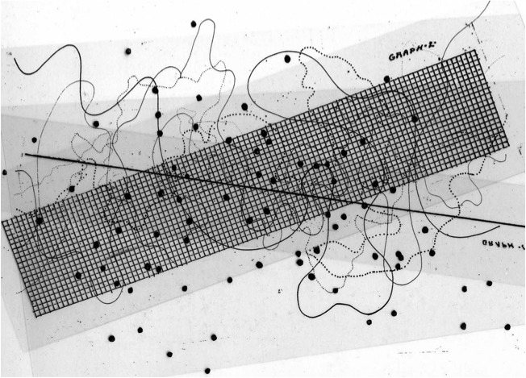

CAT
A
LOG
UE
O
F
MAK
I
N
G
!
THIS CATALOGUE ACCOMPANIES BIO_
INTERFACES
AND IS A DOCUMENTATION OF ALL
←EXPERIMENTS
HELD IN TANDEM.
ARE.NA ↗
REPOSITORY ↗
PROCESS JOURNAL ↗
EXP 1: CAPACITIVE SENSORS
Trying to create a touch sensor using two post-its lined with wire.
Trying to create a touch sensor using two post-its lined with wire.
Trying to create a touch sensor using two post-its lined with wire.
Trying to create a touch sensor using two post-its lined with wire.
Trying to create a touch sensor using two post-its lined with wire.
